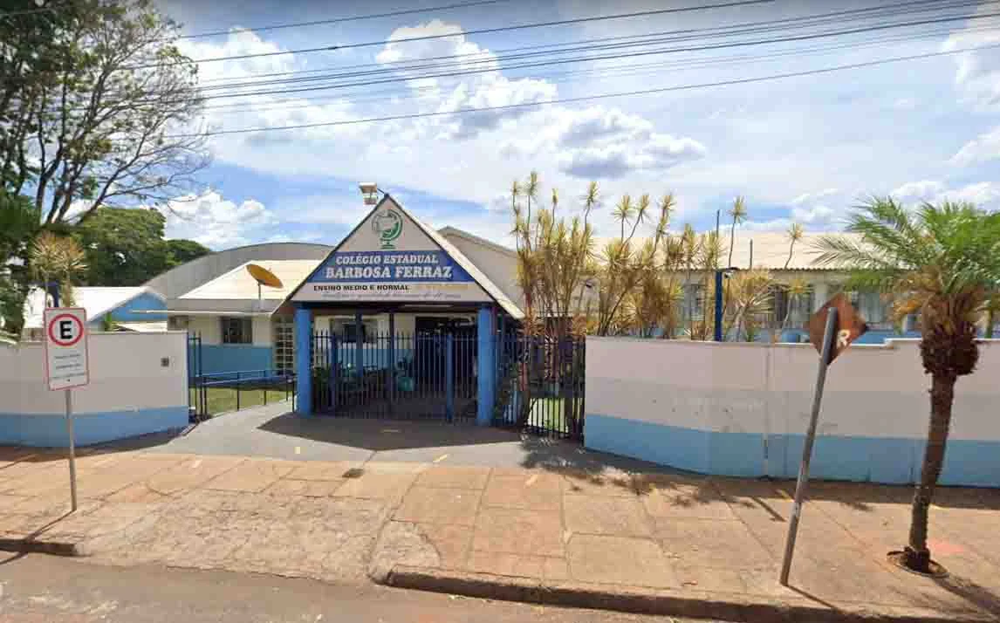

Bem-vindo ao nosso projeto sobre lixo tecnológico! Aqui no Colégio Estadual de Ivaiporã, estamos empenhados em conscientizar nossa comunidade sobre o impacto do descarte inadequado de equipamentos eletrônicos e como podemos ajudar o meio ambiente.
